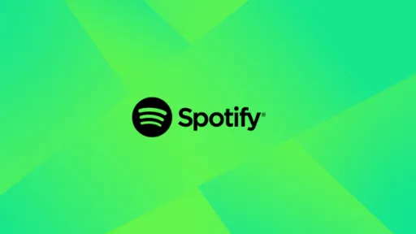
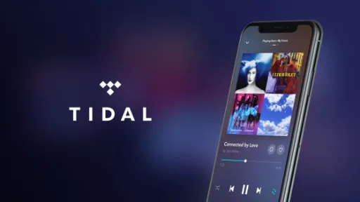

Apple Music
Spotify
Tidal

Amazon Music
YouTube Music
Yousee Musik

Telmore Musik

Deezer
Soundcloud
Mennesker lytter til musik og podcasts af forskellige årsager. Musik er en form for kunst og udtryk, der kan påvirke vores følelser, forbedre vores humør og give udtryk for vores egen identitet. Det kan også være en kilde til trøst, inspiration og underholdning.
Podcasts har vundet popularitet som en måde at lære, underholde og udforske emner på en dybere måde. De tilbyder en overflod af indhold, der spænder fra uddannelse og nyheder til underholdning og personlig udvikling. Podcasts giver lyttere mulighed for at fordybe sig i emner, de er passionerede omkring, og de kan lytte, mens de udfører daglige opgaver eller pendler.
Samlet set er musik og podcasts en vigtig del af vores liv og kultur, der beriger vores daglige oplevelser og giver os mulighed for at forbinde med kunst, information og historier på en meningsfuld måde.
Har du fundet en stavefejl? Mangler der et link? Er der et link der ikke virker? Kontakt vores support her.